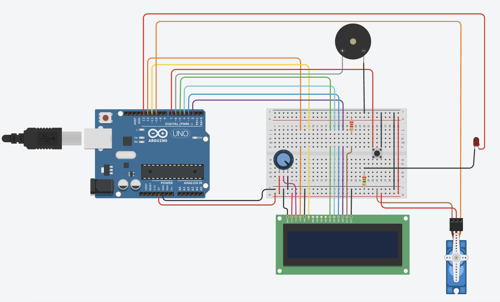
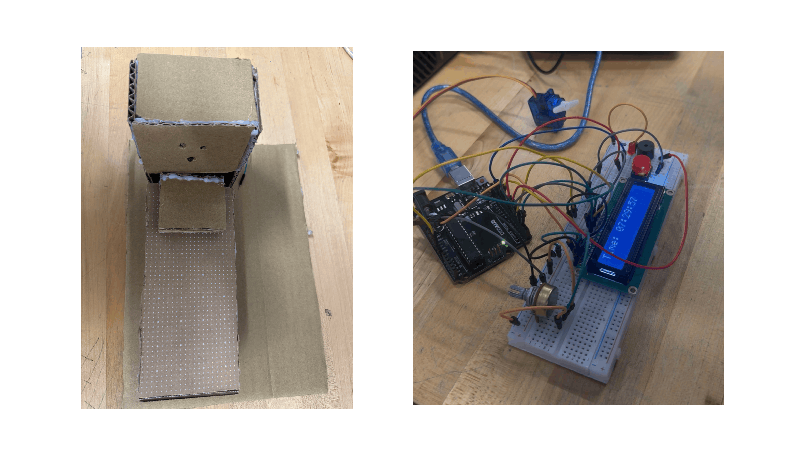

Course: TECH 117 (Computer Engineering Technology, Winter 2026)
Instructor: Ph.D. Ana Rodrigues
Team Members:
The project is to build a Smart Alarm Bed System using an Arduino Uno. It is connected to SDG 3: Good Health and Well-Being from the United Nations goals, focusing on improving daily routines and sleep habits. The system will activate an alarm at a specific time using a real-time clock, produce sound through a buzzer, and control a servo motor to move the bed. It will operate in three phases: first, a buzzer sound; second, the bed shaking left and right; and third, the bed tilting to about 45 degrees. A button will also be included to allow the user to stop the system.
The project will be considered successful if the alarm triggers at the correct time and each phase runs in the correct order without skipping. The servo motor should move properly during both shaking and tilting, and the buzzer should function correctly in all phases. The system should also stop immediately when the button is pressed and run smoothly without errors.
There are several challenges that may make the project harder to complete. These include limited time to build and test the system, difficulty in constructing the mini bed structure, and possible programming bugs or timing errors. There may also be issues when connecting all the components together.
To deal with these challenges, alternative plans can be used. The movement can be simplified by only using the tilting function instead of shaking. Each component, such as the buzzer, servo motor, and RTC, can be tested separately before combining them. A smaller or lighter model can be used to make it easier for the servo to move the structure. Timing can also be adjusted if the phases do not work correctly.
The circuit includes an LED, LCD, buzzer, push button, potentiometer, servo motor, and an Arduino board connected with wires. The LED is a small light that turns on when current flows. The LCD displays information like readings or messages. The buzzer produces sound when activated. A push button acts as a switch to control the circuit when pressed. The potentiometer is a variable resistor used to adjust voltage or display. The servo motor is a device that rotates to a specific position based on signals from the Arduino.

| Item | Qty | Unit Price | Subtotal | Source |
|---|---|---|---|---|
| Arduino Uno R3 (2pcs Pack) | 1 | $17.00 | $17.00 | Amazon.ca |
| Freenove I2C LCD 1602 (2 Pack) | 1 | $9.00 | $9.00 | Amazon.ca |
| Miuzei 9G Micro Servo (10 Pcs) | 1 | $3.00 | $3.00 | Amazon.ca |
| Active Piezo Buzzer (5pcs) | 1 | $0.54 | $0.54 | Amazon.ca |
| Emergency Stop Push Button | 1 | $1.13 | $1.13 | Amazon.ca |
| 220 Ohm Resistors (100pcs) | 2 | $0.06 | $0.12 | Amazon.ca |
| 5mm LED Assorted Kit (100pcs) | 1 | $0.25 | $0.25 | Amazon.ca |
| 10K/100K Potentiometer (3 Pack) | 1 | $1.67 | $1.67 | Amazon.ca |
| Solderless Breadboards (4pcs) | 1 | $4.00 | $4.00 | Amazon.ca |
| Estimated Total | $36.71 | — | ||
The following image shows the assembled prototype on a breadboard and cardboard.

The following Arduino code controls the system.
#include <LiquidCrystal.h>
#include <Servo.h>
#define AlarmSND 6
#define ButtonPin 7
#define LEDPin 13
LiquidCrystal lcd(12, 11, 5, 4, 3, 2);
Servo bedServo;
// Time Tracking
int Hours = 7, Minutes = 29, Seconds = 55;
unsigned long lastTick = 0;
// Alarm Logic
bool alarmActive = false;
bool alarmDeactivatedToday = false;
unsigned long alarmStartTime = 0;
unsigned long lastServoMove = 0;
bool servoDir = true;
void setup() {
lcd.begin(16, 2);
pinMode(AlarmSND, OUTPUT);
pinMode(LEDPin, OUTPUT);
pinMode(ButtonPin, INPUT_PULLUP);
bedServo.attach(10);
bedServo.write(90);
lcd.print("System Ready");
delay(1000);
lcd.clear();
}
void loop() {
unsigned long now = millis();
// 1. CLOCK LOGIC - Updated for stability
if (now - lastTick >= 1000) {
lastTick += 1000;
Seconds++;
if (Seconds >= 60) { Seconds = 0; Minutes++; }
if (Minutes >= 60) { Minutes = 0; Hours++; }
if (Hours >= 24) { Hours = 0; }
if (Minutes != 30) { alarmDeactivatedToday = false; }
drawClock();
}
// 2. TRIGGER ALARM
if (Hours == 7 && Minutes == 30 && Seconds == 0 && !alarmDeactivatedToday && !alarmActive) {
alarmActive = true;
alarmStartTime = now;
}
// 3. STOP BUTTON
if (digitalRead(ButtonPin) == LOW && alarmActive) {
alarmActive = false;
alarmDeactivatedToday = true;
noTone(AlarmSND);
digitalWrite(LEDPin, LOW);
bedServo.write(90);
lcd.setCursor(0, 1);
lcd.print("ALARM STOPPED ");
}
// 4. ALARM PHASES (10 Seconds Each)
if (alarmActive) {
unsigned long elapsed = now - alarmStartTime;
if (elapsed < 10000) {
// PHASE 1: 1 Beep + Solid LED
lcd.setCursor(0, 1);
lcd.print("PH1: 1 BEEP ");
digitalWrite(LEDPin, HIGH);
if ((now - alarmStartTime) % 2000 < 100) tone(AlarmSND, 500); else noTone(AlarmSND);
}
else if (elapsed < 20000) {
// PHASE 2: 2 Beeps + Slow Flash + Servo
lcd.setCursor(0, 1);
lcd.print("PH2: 2 BEEP/SLOW");
// LED Slow Flash (500ms)
digitalWrite(LEDPin, (now / 500) % 2);
// 2 Beeps Logic
int beepCycle = (now % 1000);
if (beepCycle < 100 || (beepCycle > 200 && beepCycle < 300)) tone(AlarmSND, 600); else noTone(AlarmSND);
// Servo Shake
if (now - lastServoMove >= 300) {
lastServoMove = now;
bedServo.write(servoDir ? 75 : 100);
servoDir = !servoDir;
}
}
else if (elapsed < 30000) {
// PHASE 3: Fast Flash + Tilt
lcd.setCursor(0, 1);
lcd.print("PH3: FAST TILT ");
digitalWrite(LEDPin, (now / 100) % 2); // Fast Flash
tone(AlarmSND, 800); // Steady sound
bedServo.write(130);
}
else {
stopAlarm();
}
}
}
void stopAlarm() {
noTone(AlarmSND);
digitalWrite(LEDPin, LOW);
bedServo.write(90);
alarmActive = false;
alarmDeactivatedToday = true;
lcd.setCursor(0, 1);
lcd.print("ALARM TIMEOUT ");
}
void drawClock() {
lcd.setCursor(0, 0);
lcd.print("Time: ");
if (Hours < 10) lcd.print('0');
lcd.print(Hours);
lcd.print(':');
if (Minutes < 10) lcd.print('0');
lcd.print(Minutes);
lcd.print(':');
if (Seconds < 10) lcd.print('0');
lcd.print(Seconds);
}
This project aims to create a smart bed that wakes a person using a three-phase system. If the person does not wake up when the alarm sounds, the second phase activates a vibration mechanism to create mild discomfort and encourage them to wake up. If there is still no response, the final phase initiates movement of the bed, making it difficult for the person to remain asleep and ensuring they wake up.